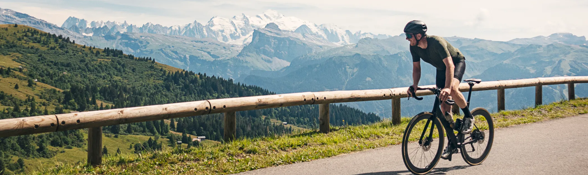
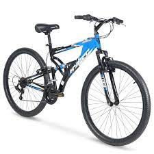
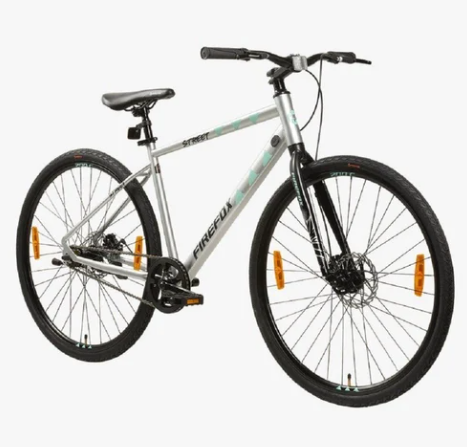
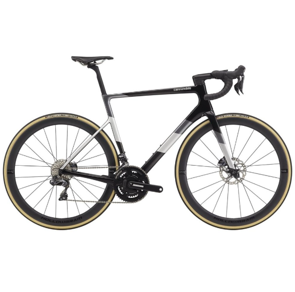

Welcome to Jora's Cycle World

Find Your Perfect Ride: Explore the Wide Range of Cycles
At Jora Cyle Store, we are on a relentless mission to revolutionize the very essence of biking, delivering a
concoction of unparalleled quality and unbridled innovation right into your hands.
Our splendid variety of cycles caters to the eclectic mix of riders. Our range of cycles caters to every
rider, whether you're a beginner looking for a reliable companion or an experienced enthusiast seeking an
upgrade. With our attention to detail and innovative designs, each Jora cycle is meticulously crafted to
provide a superior riding experience.
Variety of Cycles

Mountain Cycles, often referred to as MTBs or mountain cycles, are specially designed bicycles
for
off-road cycling and rough terrains. They are popular among outdoor enthusiasts, adventure
seekers,
and fitness enthusiasts.
Mountain bikes are designed with sturdy frames and wide tires to handle rough and uneven
surfaces.
They usually have front and rear suspension systems (full suspension or hardtail) to absorb
shocks
and bumps, providing a smoother ride on rocky trails.

Street Cycles, also known as road bikes, are designed for fast and efficient riding on paved
roads
and smooth surfaces. They have lightweight frames typically made of materials like aluminum or
carbon fiber, enhancing speed and agility.
Road bikes feature narrow, smooth tires that minimize rolling resistance, allowing riders to
achieve
higher speeds with less effort. They come with drop handlebars that provide various hand
positions,
promoting aerodynamic riding postures.

Race Cycles, specifically designed for competitive racing, are engineered for maximum speed,
agility, and aerodynamics. They feature lightweight frames made from materials like carbon
fiber,
ensuring superior strength without adding extra weight.
Race cycles boast narrow, high-pressure tires that minimize rolling resistance and enhance
speed.
They are equipped with advanced gear systems, allowing cyclists to swiftly change gears and
maintain
optimal cadence, crucial for competitive racing scenarios.
Age Categories
To choose the right bike for your child, you need to keep a few things in mind. To begin with,
you must look for a lightweight cycle, one that can be easily handled by your child. Also, the
bike must have certain safety features, such as a sturdy frame, safety pads, and side training
wheels, to mention a few. Further, you must select a bike that suits the age and height of your
child. Finally, it must have an attractive design to entice your little one. Wondering whether
all these features can be found in a single bike? Of course, and this is where Jora Cycle World
come into the picture! The best part is that Jora Cycle World has bikes designed for specific
age groups.
Let's take a look.
Adult cycles, designed for mature riders, come in a wide variety of styles to cater to
different
needs and preferences. They typically feature durable frames made from materials like steel,
aluminum, or carbon fiber, offering strength and stability while accommodating various
riding
terrains.These cycles have larger wheel sizes, typically 26 inches or 700c, ensuring efficient
pedaling
and a comfortable riding experience for adults.
We understand that finding the right bike for your lifestyle can be a challenge, not to mention
attempting to locate the right size bike after that decision has been made. There was a time
long ago when finding the right bike was as easy as picking from the two or three options the
local shop had to offer.